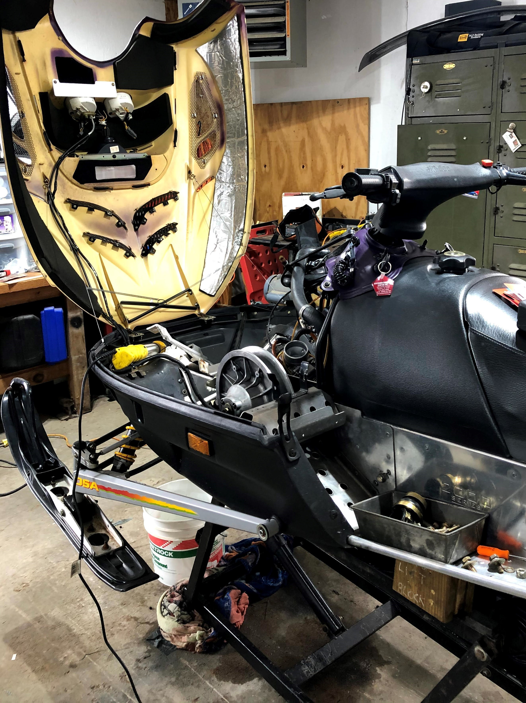
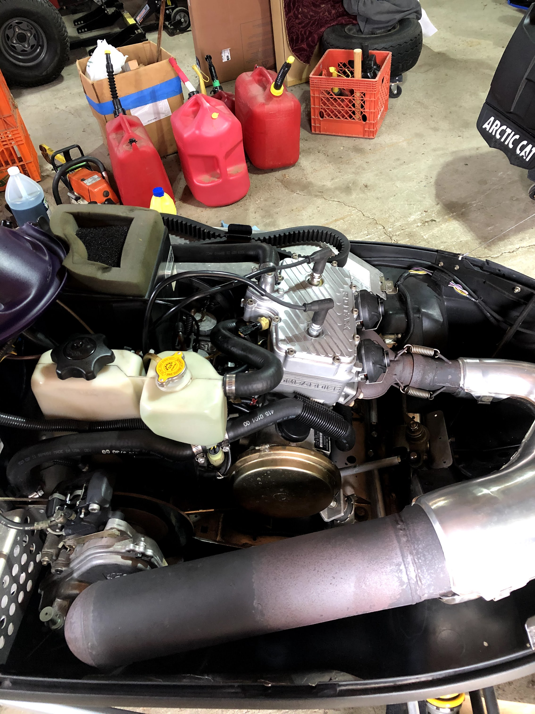
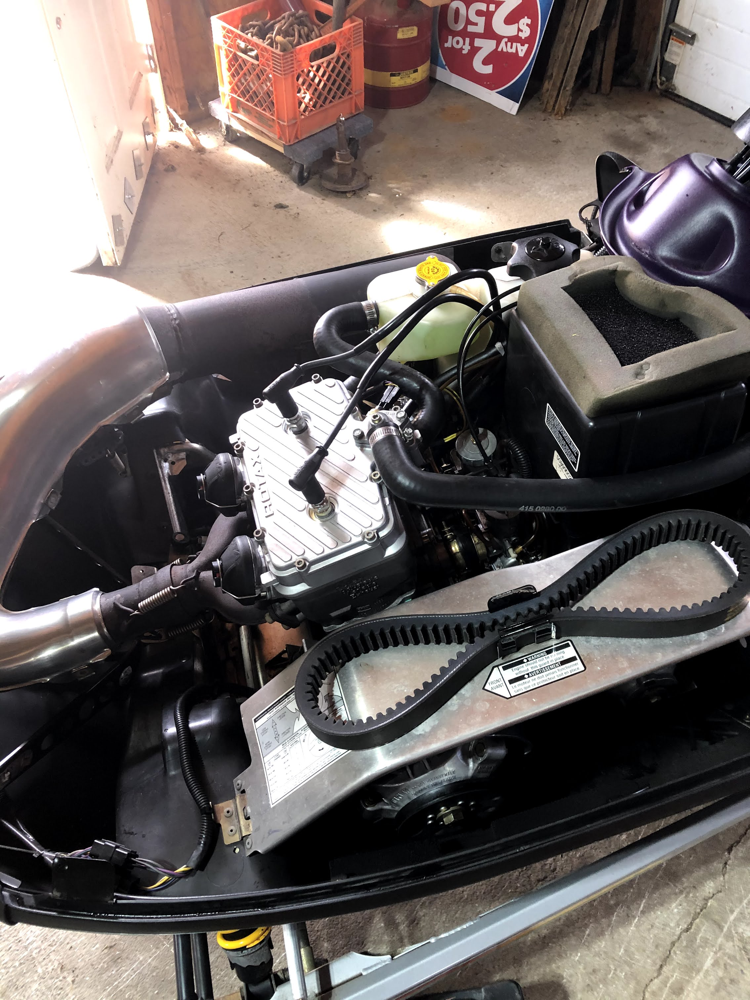

The most recent project that was finished was the rebuilding of an snowmobile engine. One of the pistons inside the block cracked and wasn't allowing any spark from the spark plug. This is a prime example of making sure that there are fluids in the engine. The top of the engine needed to come off in order to reach the pistons. This job took about 12 hours across multiple days to complete.
1 / 5

One of the pistons inside the engine was totally destroyed and needed to be replaced
2 / 5

The next step was to take the entire engine out of the front of the snowmobile.
3 / 5

We were putting the engine back together which needed
great technical skill and patience.
4 / 5

The engine is back together after mulitple days worth of work
5 / 5

This is from the other side of the engine